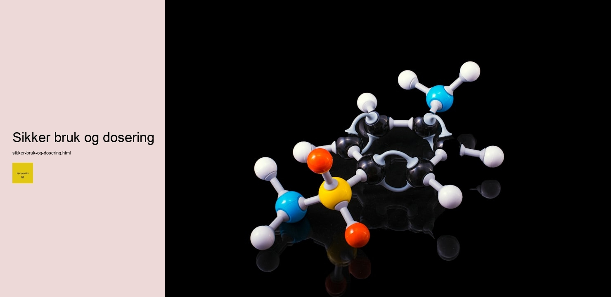

Lurer du på om det er verdt å Kjøp peptider i form av kollagen — eller om det bare er dyrt proteinpulver med fin etikett? Godt spørsmål. Her får du det ærlige bildet av hva kollagen peptider faktisk er, og hva de kan gjøre for hud, hår og ledd.
Hva er kollagen peptider?
Kollagen er det vanligste proteinet i kroppen — selve «limet» som holder hud, sener, ledd og bindevev sammen. Problemet er at kroppens egen kollagenproduksjon synker med alderen, omtrent fra midten av 20-årene. Det er her tilskudd kommer inn.
Kollagen peptider (også kalt hydrolysert kollagen) er kollagen som er brutt ned til korte, lett opptakelige kjeder av aminosyrer. Den hydrolyseringen er hele poenget: store kollagenmolekyler tas dårlig opp, mens de små peptidene absorberes effektivt og kan brukes som byggesteiner — og som signaler om å produsere mer eget kollagen.
Vanlig kollagen = for stort til å tas opp godt. Kollagen peptider = klippet i småbiter kroppen faktisk kan bruke. Derfor står det «peptider» eller «hydrolysert» på de gode produktene.
Typer kollagen
Det finnes mange kollagentyper, men tre dekker det aller meste du trenger å vite for et kosttilskudd.
Type I, II og III
- Type I — den mest utbredte. Hud, hår, negler, sener og bein. Dette er «skjønnhetstypen» de fleste er ute etter.
- Type II — finnes i brusk. Brukes spesifikt for ledd og knokkelhelse.
- Type III — opptrer ofte sammen med type I, og støtter hudens struktur og blodårer.
- Les hele guiden om kollagentyper →

Marint vs bovint kollagen
Den vanligste forvirringen ved kjøp. Kort forklart:
- Marint kollagen (fra fisk) er rikt på type I, har spesielt små peptider og regnes for å ha godt opptak. Populært for hud. Passer ikke deg som unngår fisk.
- Bovint kollagen (fra storfe) gir type I og III, er rimeligere og bredt tilgjengelig. Et solid allroundvalg.
Vil du ha maks hudfokus og tåler fisk: marint. Vil du ha bredde til en god pris: bovint. Begge er hydrolyserte peptider — forskjellen ligger i kilde og typeprofil. Full sammenligning: marint vs bovint →
Kilder og opptak
Uansett kilde er nøkkelen at produktet er hydrolysert — det er det som gir god absorpsjon. Du finner også vegansk «kollagen», men vær oppmerksom: ekte kollagen er animalsk, så veganske varianter inneholder ikke kollagen, men byggesteiner og næringsstoffer som skal støtte kroppens egen produksjon. Det er en annen ting.
Fordeler med kollagen peptider — hva sier forskningen?
Her er kollagen faktisk en av de mer lovende «beauty-from-within»-ingrediensene, med voksende dokumentasjon. Realistisk kan du forvente:
| Område | Hva forskningen antyder | Tidshorisont |
|---|---|---|
| Hud | Bedre elastisitet og fuktighet, redusert tørrhet | 8–12 uker |
| Ledd | Mindre ubehag, særlig ved aktivitet | 3–6 måneder |
| Negler | Mindre sprøhet, raskere vekst (rapportert) | 2–4 måneder |
| Hår | Mer begrenset dokumentasjon, lovende anekdoter | Varierer |
Det magiske ordet er, som alltid, tålmodighet. Kollagen bygger seg sakte — gi det minst to-tre måneder før du dømmer. Mer om kollagen for hud → · for ledd →
Hvordan ta kollagen peptider — dosering og timing
Dosering er enkelt og fleksibelt. Studier bruker typisk:
- 2,5–10 gram daglig — hud og negler ofte i nedre ende, ledd gjerne i øvre
- Når som helst på dagen — det er ingen «magisk» tid; konsistens slår timing
- Rør ut i kaffe, smoothie eller vann — hydrolysert kollagen er nesten smakløst og løser seg lett
Knytt det til en fast vane — morgenkaffen, for eksempel. Det du tar til samme tid hver dag, husker du faktisk å ta. Og det er den daglige konsistensen som gir resultater. Full doseringsguide →
Hvordan velge et godt kollagentilskudd
Markedet er fullt av produkter, og prisene spriker vilt. Slik skiller du de gode fra de dyre etikettene:
- Hydrolysert / peptider — skal stå tydelig. Ellers er opptaket dårlig.
- Kilde oppgitt — marint eller bovint, og gjerne sporbarhet
- Dose per porsjon — sjekk at du faktisk får nok gram, ikke en «pixie dust»-mengde
- Lite fyllstoff — rene produkter trenger ikke en lang liste tilsetninger
- Tredjepartstesting — et pluss for kvalitet og renhet
Hydrolysert? ✓ Kilde oppgitt? ✓ Nok gram per dose? ✓ Tre grønne flagg, og du har sannsynligvis et ærlig produkt — uavhengig av hvor fin boksen er. Komplett guide til å velge tilskudd →
Kombinere kollagen med andre næringsstoffer
Kollagen jobber ikke alene. Noen følgesvenner gjør det bedre:
- Vitamin C — kroppen trenger det for å lage kollagen, så mange produkter har det innebygd
- Sink og kobber — bidrar i bindevevets prosesser
- Hyaluronsyre — populær makker for hud-fokuserte tilskudd
Og husk: et tilskudd er nettopp et tilskudd. Grunnmuren — variert kosthold, nok protein, søvn og solbeskyttelse — gjør fortsatt mest for hud og ledd. Kollagen er kremen på toppen, ikke hele kaka.
Kollagen peptider regnes som svært veltolererte for de fleste. Er du gravid, ammende, har allergier (særlig fisk/skalldyr for marint), eller en helsetilstand — sjekk med lege først. Dette er informasjon, ikke medisinske råd.